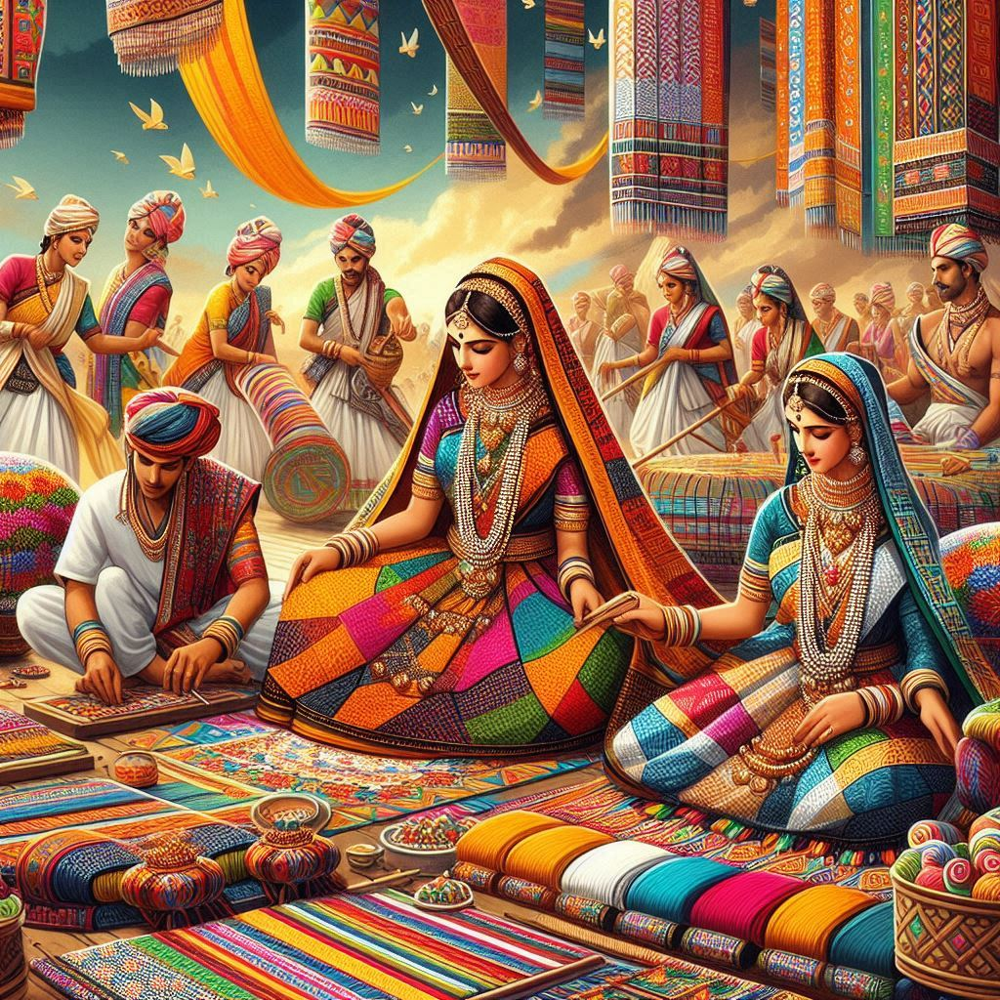
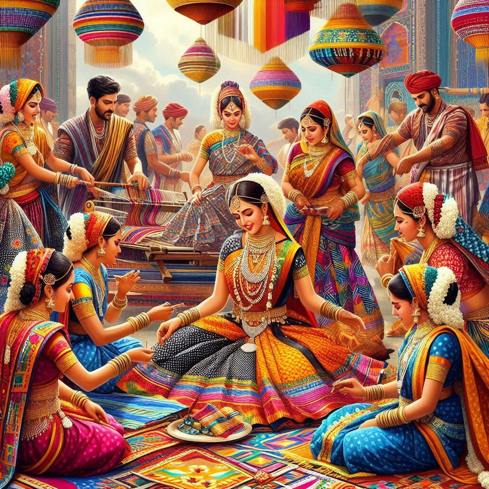

1. Language and Literature
- Telugu Language: Telugu, the official language of the state, plays a significant role in the traditions of Telangana. The state has a rich literary heritage, with classical poetry, folk songs, and modern literature flourishing in Telugu.
- Urdu Influence: Due to the historical influence of the Nizam's rule, Urdu also holds cultural significance, particularly in the urban areas like Hyderabad. This has led to a unique blend of Telugu and Urdu in everyday speech and cultural practices.
2. Festivals
- Bathukamma Festival: A unique festival celebrated by the women of Telangana, Bathukamma is dedicated to Goddess Gauri (a form of Durga). Women create flower stacks (Bathukammas) and celebrate by singing traditional songs, dancing, and offering prayers to the goddess. It marks the arrival of the monsoon season and is a symbol of the state's agrarian roots.
- Bonalu Festival: A festival dedicated to Goddess Mahakali, celebrated with great fervor in Hyderabad and surrounding regions. Devotees offer bonams (a form of offering) consisting of rice, curd, jaggery, and buttermilk, placed in traditional earthen pots. The procession includes drummers, dancers, and devotees offering prayers for the well-being of their families and communities.
- Sankranti (Makar Sankranti): A harvest festival celebrated across Telangana with traditional dances like Kolattam, kite flying, and the preparation of special sweets like tilgul (sesame and jaggery) and pongal. This marks the end of winter and the start of the harvest season.
- Ugadi: The Telugu New Year, Ugadi is celebrated with rituals, special prayers, and the preparation of Ugadi Pachadi (a dish made of jaggery, tamarind, and raw mango, symbolizing the different phases of life). The festival is marked by new clothes, traditional dances, and feasts.
- Ramzan and Eid: Due to the significant Muslim population, Ramzan (the month of fasting) and Eid are celebrated with great devotion, particularly in Hyderabad. Hyderabadi biryani, haleem, and sheer khurma are special delicacies prepared during these occasions.
3. Music and Dance
- Folk Music: Telangana has a rich tradition of folk music, often linked to its agrarian lifestyle and religious practices. Some of the prominent forms include:
- Oggu Katha: A traditional storytelling art form that involves singing and narrating myths, epics, and folklore accompanied by dholak and other musical instruments.
- Burra Katha: A narrative performance where stories from epics like the Ramayana and Mahabharata are narrated in a rhythmic and dramatic style. The performers use a drum, cymbals, and wooden clappers to create an engaging experience.
- Lambadi Dance: A traditional dance form performed by the Lambadi (Banjara) tribal communities, often accompanied by songs that depict their way of life.
- Classical Music: Telangana has a strong classical music tradition, rooted in Carnatic music, with several musicians and composers contributing to the state’s cultural legacy. The Singareni Sangeet tradition is associated with the coal belt area of the state, which combines both classical and folk forms.
- Dance Forms: Traditional dance forms like Kolattam (a dance with sticks), Dappu (drum dance), and Gussadi (performed by tribal communities) are integral to the cultural identity of Telangana.


4. Crafts and Handicrafts
- Pochampally Ikat: Telangana is famous for its Pochampally Ikat weaving, which involves intricate dyeing techniques to create beautiful, vibrant patterns on silk and cotton fabrics. These handwoven textiles are highly prized for their craftsmanship and are popular worldwide.
- Bidriware: A traditional metalwork craft, Bidriware involves inlaying precious metals like silver into a blackened alloy, creating beautiful decorative items like vases, trays, and jewelry.
- Nirmal Paintings: Originating from the town of Nirmal, this style of painting is known for its delicate brushwork and intricate designs, often depicting Hindu gods, goddesses, and animals.
- Lambadi Embroidery: The Lambadi women are known for their exquisite embroidery work, often decorating traditional clothes and textiles with bright colors and mirror work.
5. Cuisine
- Hyderabadi Biryani: A fragrant rice dish made with basmati rice, marinated meat (usually chicken or mutton), and a blend of aromatic spices. It’s the most famous dish associated with the region, especially in Hyderabad.
- Gongura: A tangy green leaf that is often used in chutneys, curries, and dals. Gongura Pachadi (chutney) is one of the signature dishes of Telangana.
- Sakinalu and Garijalu: Traditional snacks made during festivals, sakinalu are rice flour spirals, while garijalu are deep-fried sweets filled with jaggery.
- Sarva Pindi: A savory pancake made with rice flour, peanuts, and spices, often served as a snack.
- Nellore Chepala Pulusu: A fish curry made with tamarind, mustard seeds, and a blend of spices.
6. Dress and Attire
- Traditional Dress for Women: Women typically wear Sarees, often in bright colors and handwoven textiles like Pochampally or Kosa Silk. For festive occasions, the attire is more elaborate, with gold jewelry and decorative accessories.
- Traditional Dress for Men: Dhoti or Lungi is worn by men in rural areas, especially for religious or cultural functions. In urban settings, men wear kurta-pajama or shirts.
- Hyderabadi Attire: In cities like Hyderabad, you’ll also find Sherwanis, Kurta-Pajamas, and Jubbas (a type of long coat) as part of the traditional attire worn for weddings and formal occasions.
7. Social Customs and Traditions
- Telangana Marriages: Weddings are an elaborate affair, with customs like Jeelakarra Bellam (a ritual in which the groom ties a sacred thread on the bride's neck). The ceremonies are accompanied by music, dancing, and a feast that includes traditional dishes like biryani, halwa, and sweet pongal.
- Cattle Festivals: In rural Telangana, cattle festivals like Makar Sankranti are celebrated with rituals for the well-being of livestock, including rituals, songs, and dances.
8. Folk Traditions
- Gussadi Dance: A traditional dance form performed by tribal communities to celebrate occasions like festivals and harvests. The dancers wear colorful costumes and perform synchronized movements to the beats of drums.
- Dappu Dance: The Dappu, a traditional drum, is used in folk dances, especially in rural Telangana. The rhythmic beats and lively movements are an essential part of many folk performances.
Conclusion
Telangana’s traditions are a blend of ancient customs, rural practices, and the influences of its royal history. The state’s festivals, arts, crafts, cuisine, and folk traditions reflect its cultural richness, offering a window into the diverse ways of life that have evolved over centuries. Whether through its vibrant festivals, intricate handcrafts, or mouth-watering dishes, Telangana’s traditions continue to thrive and shape its unique identity.